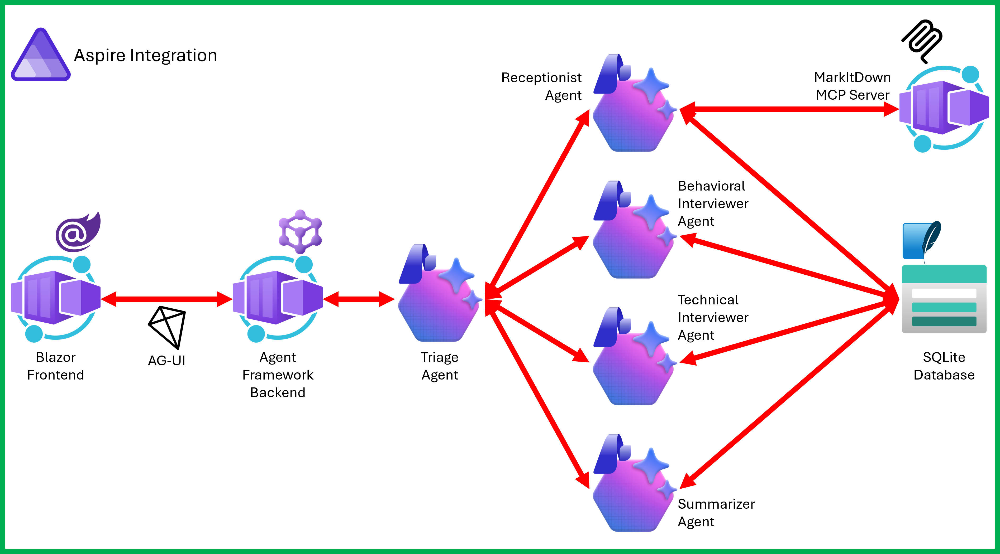
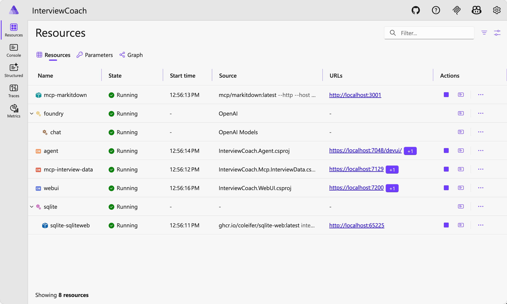
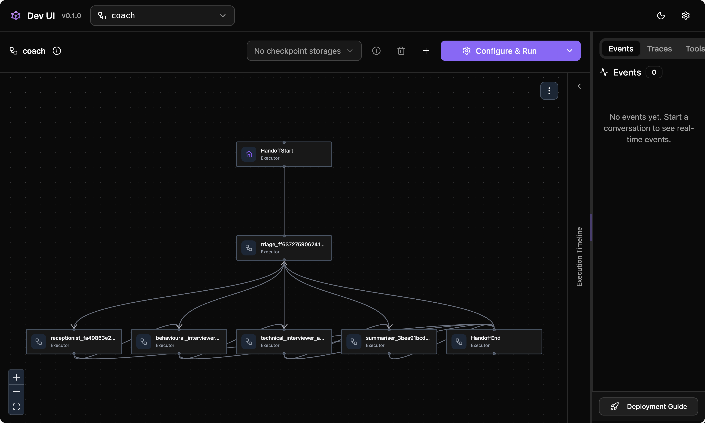
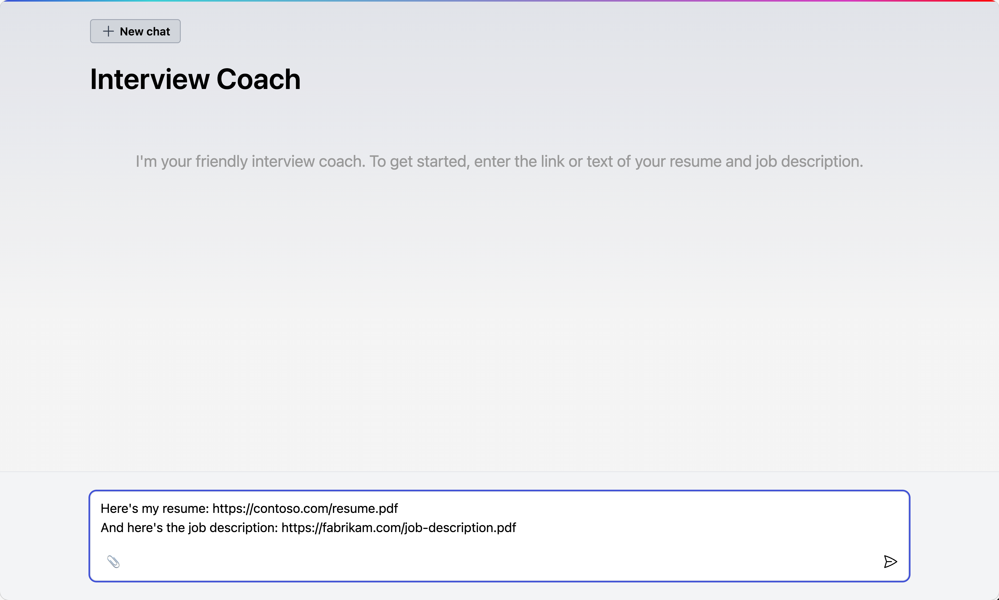

AI 에이전트를 개발하는 것은 점점 쉬워지고 있습니다. 하지만 여러 서비스, 상태 관리, 프로덕션 인프라를 갖춘 실제 애플리케이션의 일부로 배포하는 것은 여전히 복잡합니다. 실제로 .NET 개발자 커뮤니티에서는 로컬 머신과 클라우드 네이티브 방식의 클라우드 환경 모두에서 실제로 동작하는 실전 예제에 대한 요구가 많았습니다.
그래서 준비했습니다! Microsoft Agent Framework과 Microsoft Foundry, MCP(Model Context Protocol), Aspire등을 어떻게 프로덕션 상황에서 조합할 수 있는지를 보여주는 오픈소스 Interview Coach 샘플입니다. AI 코치가 인성 면접 질문과 기술 면접 질문을 안내한 후, 요약을 제공하는 효율적인 면접 시뮬레이터입니다.
이 포스트에서는 어떤 패턴을 사용했고 해당 패턴이 해결할 수 있는 문제를 다룹니다.
Interview Coach 데모 앱을 방문해 보세요.
.NET으로 AI 에이전트를 구축해 본 적이 있다면, Semantic Kernel이나 AutoGen, 또는 두 가지 모두를 사용해 본 적이 있을 겁니다. Microsoft Agent Framework는 그 다음 단계로서, 각각의 프로젝트에서 효과적이었던 부분을 하나의 프레임워크로 통합했습니다.
AutoGen의 에이전트 추상화와 Semantic Kernel의 엔터프라이즈 기능(상태 관리, 타입 안전성, 미들웨어, 텔레메트리 등)을 하나로 통합했습니다. 또한 멀티 에이전트 오케스트레이션을 위한 그래프 기반 워크플로우도 추가했습니다.
그렇다면 .NET 개발자에게 이것이 어떤 의미로 다가올까요?
IChatClient, 그리고 ASP.NET 앱과 동일한 호스팅 모델을 사용합니다.
Interview Coach는 이 모든 것을 Hello World가 아닌 실제 애플리케이션에 적용합니다.
AI 에이전트에는 모델 말고도 더 많은 무언가가 필요합니다. 우선 인프라가 필요하겠죠. Microsoft Foundry는 AI 애플리케이션을 구축하고 관리하기 위한 Azure 플랫폼이며, Microsoft Agent Framework의 권장 백엔드입니다.
Foundry는 자체 포털에서 아래와 같은 내용을 제공합니다:
Interview Coach에서 Foundry는 에이전트를 구동하는 모델 엔드포인트를 제공합니다. 에이전트 코드가 IChatClient 인터페이스를 사용하기 때문에, Foundry는 LLM 선택을 위한 설정에 불과할 수도 있겠지만, 에이전트가 필요로 하는 가장 많은 도구를 기본적으로 제공하는 선택지입니다.
Interview Coach는 모의 면접을 진행하는 대화형 AI입니다. 이력서와 채용 공고를 제공하면, 에이전트가 나머지를 처리합니다:
Blazor 웹 UI를 통해 실시간으로 응답 스트리밍을 제공하며 사용자와 에이전트간 상호작용합니다.
애플리케이션은 Aspire를 통해 다양한 서비스를 오케스트레이션합니다:

Aspire가 서비스 디스커버리, 상태 확인, 텔레메트리를 처리합니다. 각 컴포넌트는 별도의 프로세스로 실행시키며, 하나의 커맨드 만으로 전체를 시작할 수 있습니다.
이 샘플에서 가장 흥미로운 부분이기도 한 핸드오프 패턴으로 멀티 에이전트 시나리오를 구성했습니다. 하나의 에이전트가 모든 것을 처리하는 대신, 면접은 다섯 개의 전문 에이전트로 나뉩니다:
| 에이전트 | 역할 | 도구 |
|---|---|---|
| Triage | 메시지를 적절한 전문가에게 라우팅 | 없음 (순수 라우팅) |
| Receptionist | 세션 생성, 이력서 및 채용 공고 수집 | MarkItDown + InterviewData |
| Behavioral Interviewer | STAR 기법을 활용한 행동 면접 질문 진행 | InterviewData |
| Technical Interviewer | 직무별 기술 질문 진행 | InterviewData |
| Summarizer | 최종 면접 요약 생성 | InterviewData |
핸드오프 패턴에서는 하나의 에이전트가 대화의 전체 제어권을 다음 에이전트에게 넘깁니다. 그러면 넘겨 받는 에이전트가 모든 제어권을 인수합니다. 이는 주 에이전트가 다른 에이전트를 도우미로 호출하면서도 제어권을 유지하는 "agent-as-tools(도구로서의 에이전트)" 방식과는 다릅니다.
핸드오프 워크플로우를 어떻게 구성하는지 살펴보시죠:
면접 상황을 상상해 본다면 기본적으로 순차적인 방식으로 진행합니다: Receptionist → Behavioral → Technical → Summarizer. 각 전문가가 직접 다음으로 핸드오프합니다. 예상치 못한 상황이 발생하면, 에이전트는 재라우팅을 위해 Triage로 돌아갑니다.
이 샘플에는 더 간단한 배포를 위한 단일 에이전트 모드도 포함하고 있어, 두 가지 접근 방식을 나란히 비교할 수 있습니다.
이 프로젝트에서 도구는 에이전트 내부에 구현하는 대신 MCP(Model Context Protocol) 서버를 통해 통합합니다. 동일한 MarkItDown 서버가 완전히 다른 에이전트 프로젝트에서도 쓰일 수 있으며, 도구 개발팀은 에이전트 개발팀과 독립적으로 배포할 수 있습니다. MCP는 또한 언어에 구애받지 않으므로, 이 샘플 앱에서 쓰인 MarkItDown은 Python 기반의 서버이고, 에이전트는 .NET 기반으로 동작합니다.
에이전트는 시작 시 MCP 클라이언트를 통해 도구를 발견하고, 적절한 에이전트에게 전달합니다:
각 에이전트는 필요한 도구만 받습니다. Triage는 도구를 받지 않고(라우팅만 수행), 면접관은 세션 액세스를, Receptionist는 문서 파싱과 세션 액세스를 받습니다. 이는 최소 권한 원칙을 따릅니다.
Aspire가 모든 것을 하나로 연결합니다. 앱 호스트는 서비스 토폴로지를 정의합니다: 어떤 서비스가 존재하는지, 서로 어떻게 의존하는지, 어떤 구성을 받는지. 다음을 제공합니다:
aspire run --file ./apphost.cs로 모든 것을 시작합니다.
배포 시, azd up으로 전체 애플리케이션을 Azure Container Apps에 푸시합니다.
Aspire 대시보드를 열고, 모든 서비스가 Running으로 표시될 때까지 기다린 후, WebUI 엔드포인트를 클릭하여 모의 면접을 시작하세요.

핸드오프 패턴이 어떻게 동작하는지 DevUI에서 시각화한 모습입니다.

이 채팅 UI를 사용하여 면접 후보자로서 에이전트와 상호작용할 수 있습니다.

배포를 위해서는 이게 사실상 전부입니다! Aspire와 azd가 나머지를 처리합니다. 배포와 테스트를 완료한 후, 다음 명령어를 실행하여 모든 리소스를 안전하게 삭제할 수 있습니다:
Interview Coach를 통해 다음을 경험하게 됩니다:
azd up으로 모든 것 배포하기
전체 소스 코드는 GitHub에 있습니다: Azure-Samples/interview-coach-agent-framework
Microsoft Agent Framework가 처음이라면, 프레임워크 문서와 Hello World 샘플부터 시작하세요. 그런 다음 여기로 돌아와서 더 큰 프로젝트에서 각 부분이 어떻게 결합되는지 확인하세요.
이러한 패턴으로 무언가를 만들었다면, 이슈를 열어 알려주세요.
다음과 같은 통합 시나리오를 현재 작업 중입니다. 작업이 끝나는 대로 이 샘플 앱을 업데이트 하도록 하겠습니다.